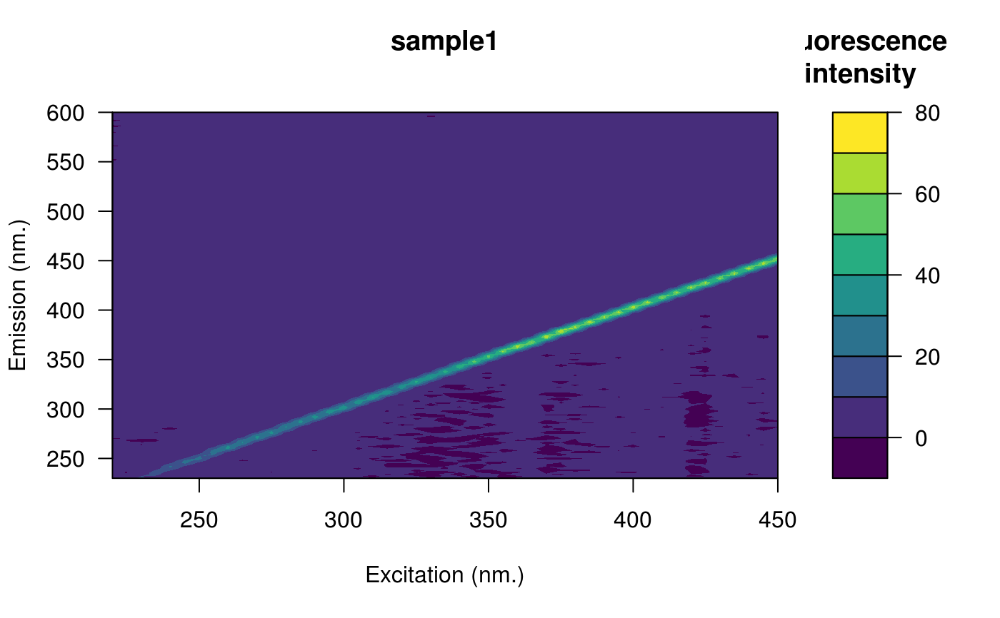

Fluorescence Intensity Calibration Using the Raman Scatter Peak of Water
Source:R/eem_raman_normalisation.R
eem_raman_normalisation.RdNormalize fluorescence intensities to the standard scale of Raman Units (R.U).
Value
An object of class eemlist.
An object of class eem containing:
sample The file name of the eem.
x A matrix with fluorescence values.
em Emission vector of wavelengths.
ex Excitation vector of wavelengths.
Details
The function will first try to use the provided blank. If the
blank is omitted, the function will then try to extract the blank from the
eemlist object. This is done by looking for sample names containing
one of these complete or partial strings (ignoring case):
nano
miliq
milliq
mq
blank
Note that if blank is omitted, the function will group the
eemlist based on file location and will assumes that there is a
blank sample in each folder. In that context, the blank will be used on
each sample in the same folder. If more than one blank is found they will
be averaged (a message will be printed if this appends).
Consider the following example where there are two folders that could represent scans performed on two different days `scans_day_1` and `scans_day_2`.
| scans_day_1 | |
| nano.csv | |
| sample1.csv | |
| sample2.csv | |
| sample3.csv | |
| scans_day_2 | |
| blank.csv | |
| s1.csv | |
| s2.csv | |
| s3.csv |
In each folder there are three samples and one blank files. In that context, `eem_remove_blank()` will use the blank `nano.csv` from `sample1.csv`, `sample2.csv` and `sample3.csv`. The same strategy will be used for files in folder `scans_day_2` but with blank named `blank.csv`.
Note that the blanks eem are not returned by the function.
The normalization procedure consists in dividing all fluorescence intensities by the area (integral) of the Raman peak. The peak is located at excitation of 350 nm. (ex = 370) between 371 nm. and 428 nm in emission (371 <= em <= 428). Note that the data is interpolated to make sure that fluorescence at em 350 exist.
References
Lawaetz, A. J., & Stedmon, C. A. (2009). Fluorescence Intensity Calibration Using the Raman Scatter Peak of Water. Applied Spectroscopy, 63(8), 936-940.
doi:10.1366/000370209788964548
Murphy, K. R., Stedmon, C. a., Graeber, D., & Bro, R. (2013). Fluorescence spectroscopy and multi-way techniques. PARAFAC. Analytical Methods, 5(23), 6557.
https://pubs.rsc.org/en/content/articlelanding/2013/ay/c3ay41160e
Examples
# Open the fluorescence eem
file <- system.file("extdata/cary/scans_day_1", "sample1.csv", package = "eemR")
eem <- eem_read(file, import_function = "cary")
plot(eem)

# Open the blank eem
file <- system.file("extdata/cary/scans_day_1", "nano.csv", package = "eemR")
blank <- eem_read(file, import_function = "cary")
# Do the normalisation
eem <- eem_raman_normalisation(eem, blank)
#> Raman area: 9.540904
plot(eem)